Years 1–3 Official Record • Built. Broken. Taken Over.
The Takeover: Josh’s My Nacua posts 2001.38 PF and takes the Year 3 crown.
The Inheritance: Dylan pilots Stargazer after taking over a neglected roster with real teeth.
The Debate:Bijan vs. Gibbs becomes an ideology war.
The Myth: Cron releases the No. 1 pick and pushes every chip in on Brock Purdy.
The Blockbuster: Hurts + A.J. Brown ↔ Herbert splits the room.
Issue Date: 2025-12-3110-team Dynasty • PPR • Year 3 Complete
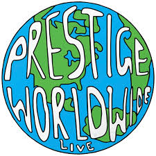
The Dynasty Era Begins
By Year 3, Prestige Worldwide stopped pretending it was “just a league.” It became a living archive: draft-night bravado, waiver-wire desperation, and trades that age like milk—but somehow still get defended in the chat. Dynasty formats don’t just crown champions; they preserve receipts.
“Every move carries weight. Every mistake survives.”
Year 1 (2023): Raw Power
The inaugural season was pure startup energy: big scores, big opinions, and even bigger waiver wallets. KBo610 led the league in points (2017.48 PF 😂) like a human spreadsheet, but the first trophy went to Grubey’s Velociraptors—proof that timing and survival still beat raw math when the playoffs arrive.
Year 2 (2024): Consolidation
Year 2 brought consolidation. The league started behaving like a dynasty league: future value debates, long-term builds, and a growing understanding that one bad QB room can ruin your season and your group chat. Browne’s Randy Jackson’s Sword took the crown, KBo stayed near the top, and the middle class of the league started learning the hardest lesson: ‘good’ is the most dangerous place to live.
Year 3 (2025): The Takeover
Year 3 was the takeover. Josh’s My Nacua went 11–3 with 2001.38 points for and the lowest points against in the league. That’s not luck—that’s gravitational dominance. Stargazer, now under Dylan after taking over a neglected but loaded roster, immediately looked like a franchise that had been waiting for an adult to take the keys. Brayden’s takeover era continued, trying to turn rubble into a roadmap.
Feature: My Nacua — The Takeover
The league tried to reduce the story to a single name: Puka Nacua. Drew’s running bit—‘Puka is carrying you’—landed because it’s funny, but also because it’s the kind of truth dynasty leagues argue about at 1:00 a.m. Still: dynasties aren’t built on one player. They’re built on weekly lineup discipline, depth, and the ability to avoid the self-inflicted wounds that sink contenders.
Puka Nacua: weekly scoreboard graffiti.
QB Future Watch: Drake Maye & the Stafford Shadow
The Bet
Maye is the kind of QB you keep forever… or regret trading by Halloween.
The Cloud
Stafford rumors reshape the entire Puka timeline. Dynasty never forgets.
Drake Maye might define the future of My Nacua if he can sustain elite play. Meanwhile, Matthew Stafford’s retirement whispers hang over the entire Puka economy. If Stafford rides into the sunset, does Puka stay a top-tier asset—or does the league start pricing in uncertainty? Dynasty is ruthless: your WR1’s value can be held hostage by a quarterback’s calendar.
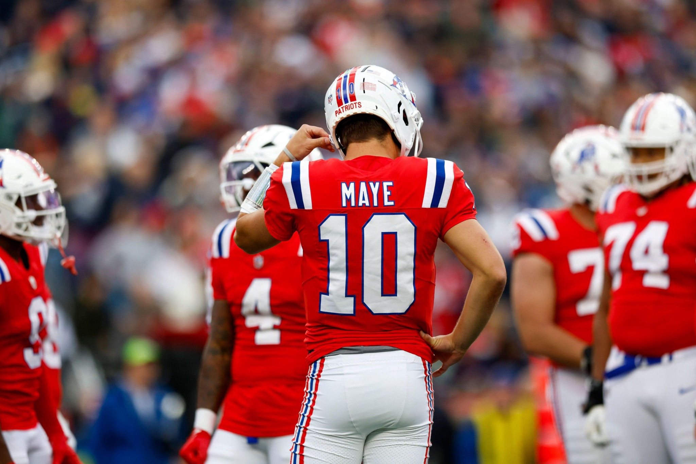Drake Maye: franchise energy with dynasty consequences.
The Great RB Civil War
No debate owned the league like Jahmyr Gibbs vs. Bijan Robinson. It wasn’t just ‘who’s better’—it was a referendum on roster philosophy. Do you chase weekly ceiling? Long-term stability? Volume? Efficiency? In the background, icons like Christian McCaffrey and Jonathan Taylor reminded everyone that running back greatness is both explosive and fragile. And when stars like Saquon Barkley fall off, the league learns (again) that dynasty timelines don’t care about your feelings.
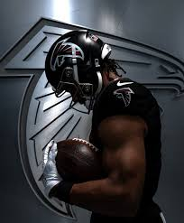
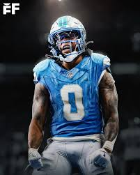
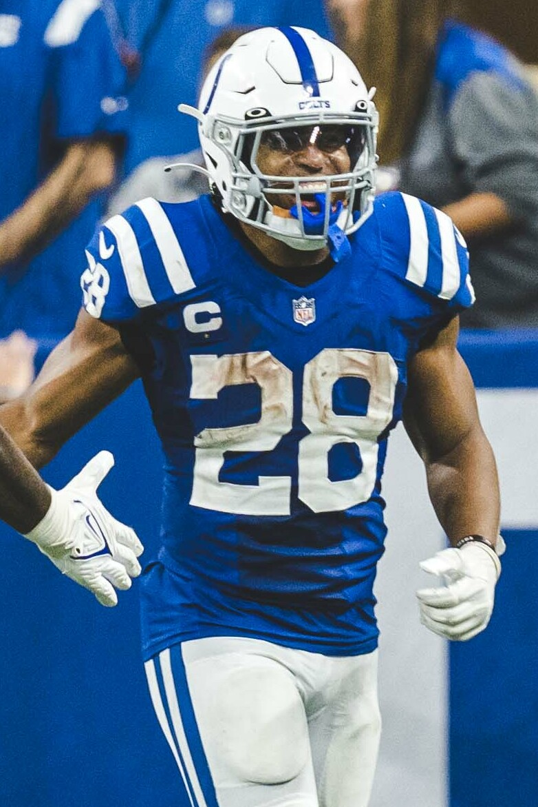
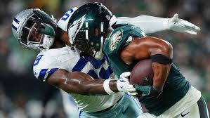
The King Lives
Derrick Henry, entering his 10th NFL season (2025), erased the idea of an RB expiration date.
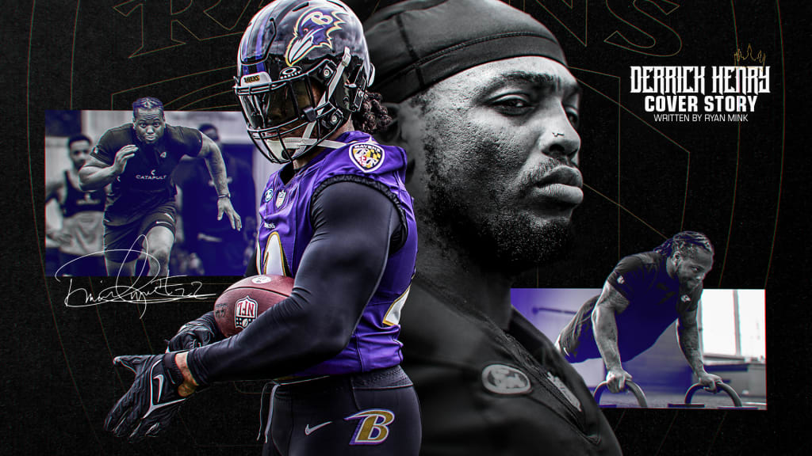
Age? Mileage? Baltimore didn’t get the memo. Henry dominated for the Ravens in 2024, pushing nearly 2,000 rushing yards
while staying efficient, violent, and unfairly fast for his size.
As he closes in on top-10 all-time rushing milestones, the tape looks the same: downhill power, breakaway speed,
and the kind of work ethic that turns “decline” into a rumor.
The legend isn’t fading — it’s leveling up. The King lives.
Stars, Fall-offs, and the Vibe Shift
The league’s broader NFL anxieties bled into dynasty anxiety: Patrick Mahomes’ injury uncertainty, questions about Joe Burrow and Ja’Marr Chase staying aligned in Cincinnati, and what becomes of Justin Jefferson without elite quarterback play. Lamar Jackson looks to return to MVP form after an injury-plagued year on a maligned team. Every one of these storylines is a dynasty multiplier—either you’re early and look smart, or you’re late and get outbid.
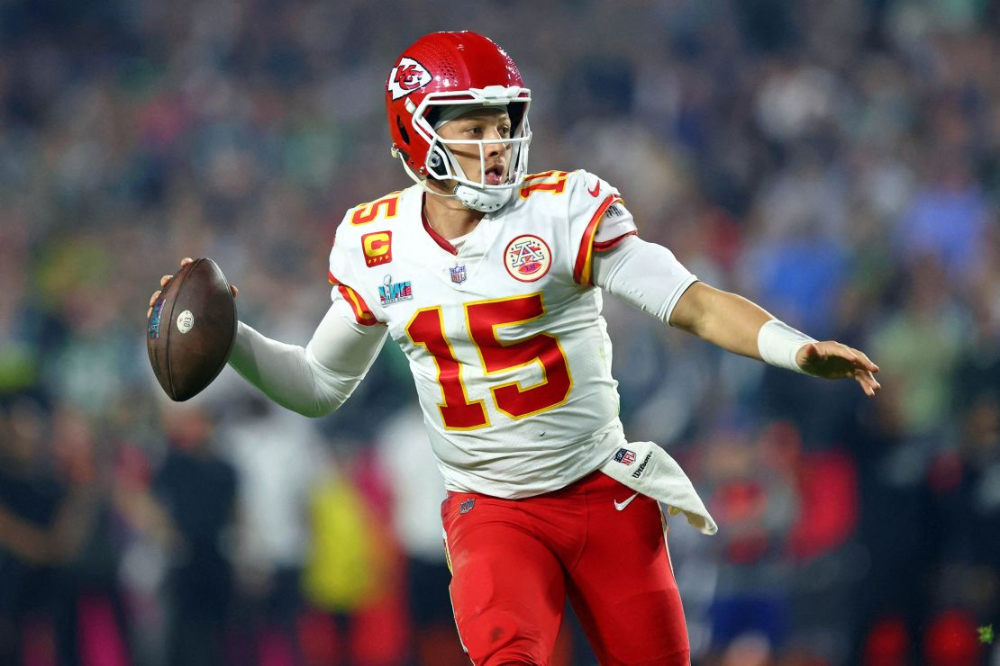
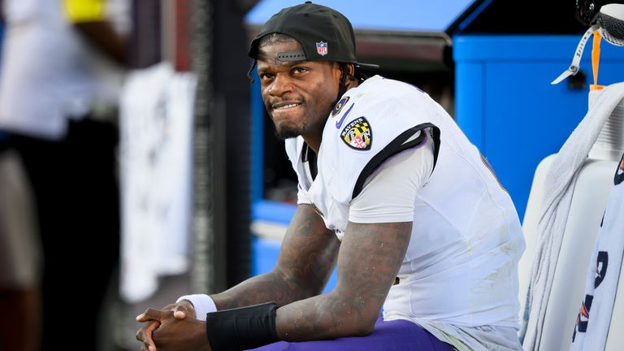
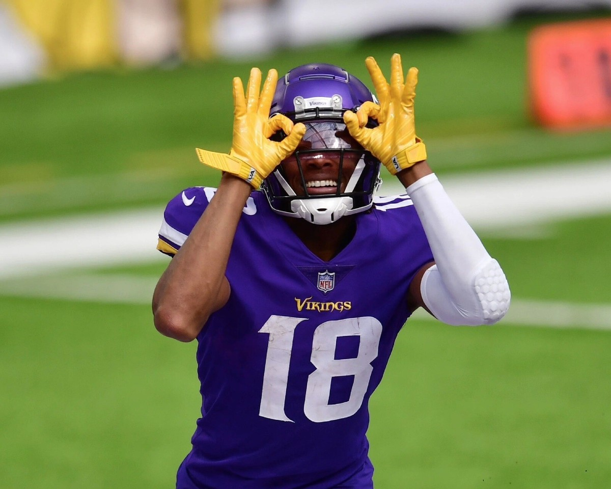
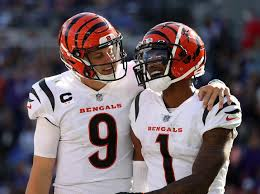
Blockbuster Trades
The blockbuster trade that split the room: Drew and Grubey swapping Jalen Hurts + A.J. Brown for Justin Herbert. It’s the cleanest kind of dynasty argument—stack ceiling versus single-asset stability. You can justify it either way, which is exactly why it will get re-litigated for years. Then there was Jameson Williams for Keenan Allen: a move that exposed the league’s core divide—win-now certainty vs. win-later faith.
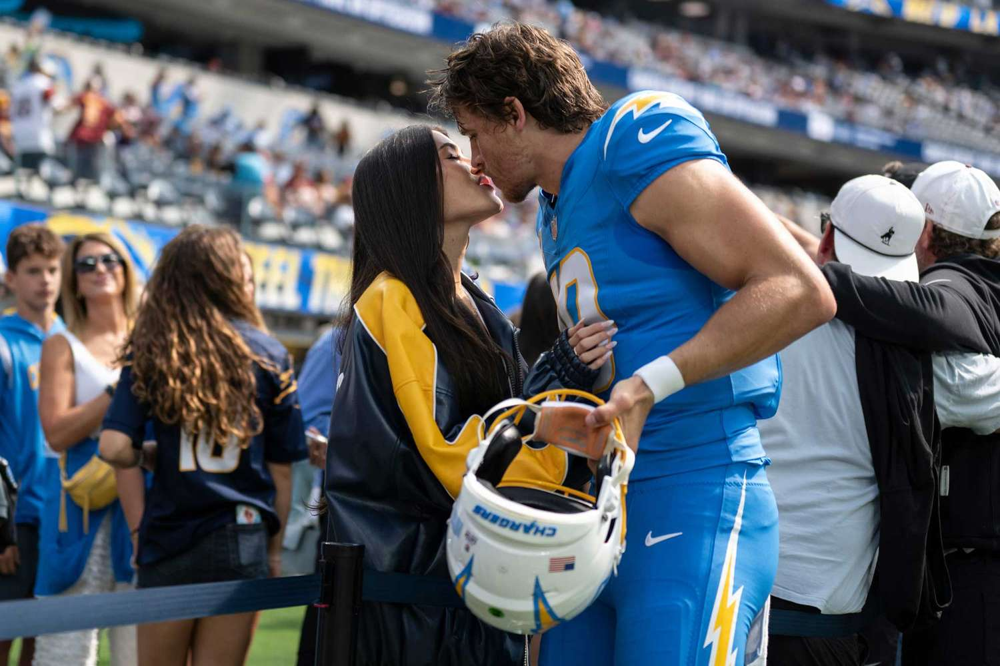Herbert: centerpiece of a trade that will be quoted forever.
Cron’s “All-In on Mr. Irrelevant” Saga
In a dynasty league, Cron did the unthinkable: he let the No. 1 pick Caleb Williams touch waivers — then pushed every chip to the center on Brock Purdy…
the literal last pick of the NFL Draft. Genius, madness, or the start of a 30-for-30. Probably all three.
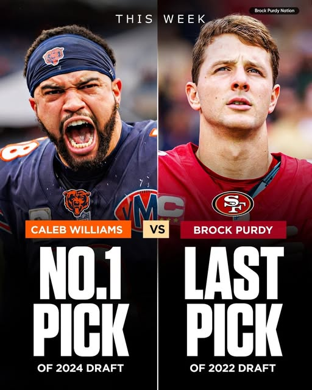
NO. 1 PICK vs LAST PICK — the receipts will outlive us all.
Power Rankings: Entering Year 4
A completely serious ranking based on Year 3 results, scoring profile, and dynasty vibes.
Rank
Team
Owner
2025 Rec
PF
Tier
Why
1
My Nacua
Josh
11-3
2001.38
S
The champ with receipts.
2
Stargazer
Dylan
10-4
1976.88
A
Inherited superteam, now weaponized.
3
Cron Squad
Cron
10-4
1870.56
A-
Contender… with one legendary myth.
4
Dgeiger1982
Drew
7-7
1974.32
B+
Points for days, wins… sometimes.
5
kbo610
KBo
7-7
1612.68
B
The spreadsheet still breathes.
6
The Replacements
Hen
8-6
1579.18
C+
Sneaky record, messy math.
7
Randy Jackson's Sword
Browne (Commish)
6-8
1588.80
B-
Former champ, current menace.
8
brayjwills28
Brayden
5-9
1480.34
C
Rebuild with a pulse.
9
The Velociraptors
Grubey
3-11
1453.56
D
Inaugural champ, now a rebuild headline.
10
CharlieBrowne
Charlie
3-11
1586.40
D+
Variance victim.
Team Breakdown
A dossier on every franchise: what it is, what it needs, and what it’s pretending not to be.
Tier S
My Nacua (Josh)
The champ with receipts.
2025 Finish 1
Record 11-3
PF / PA 2001.38 / 1637.68
Strengths Elite scoring + low-PA luck; Puka as a weekly headline; Maye as the future.
Needs QB contingency if Stafford retires; keep depth so Puka isn’t the whole plot.
The ‘Puka carries you’ bit hit—Josh still carried the trophy.
Tier A
Stargazer (Dylan)
Inherited superteam, now weaponized.
2025 Finish 2
Record 10-4
PF / PA 1976.88 / 1723.12
Strengths Top-tier points; new owner energy; contender infrastructure already built.
Needs Avoid all-in whiplash; stabilize RB depth so the floor stays high.
Dylan took over a neglected Ferrari and immediately drove it like he built the engine.
Tier A-
Cron Squad (Cron)
Contender… with one legendary myth.
2025 Finish 3
Record 10-4
PF / PA 1870.56 / 1711.16
Strengths 10–4 profile; always in the mix; ceiling if the QB bet hits.
Needs Live with the Purdy thesis; build insulation if variance swings.
Released the No. 1 pick and pushed every chip in on Mr. Irrelevant.
Tier B+
Dgeiger1982 (Drew)
Points for days, wins… sometimes.
2025 Finish 5
Record 7-7
PF / PA 1974.32 / 1812.60
Strengths Nearly 2,000 PF at .500 is objectively hilarious; ceiling weeks can beat anyone.
Needs Consistency; injury-proofing; one more hammer to convert PF into playoff leverage.
The league’s ‘should be better than your record’ exhibit A.
Tier B
kbo610 (KBo)
The spreadsheet still breathes.
2025 Finish 6
Record 7-7
PF / PA 1612.68 / 1590.94
Strengths History of dominance; knows how to build; can spike weeks.
Needs Pick a lane—reload or retool; inject youth at premium positions.
When KBo gets hot, the chat gets quiet.
Tier C+
The Replacements (Hen)
Sneaky record, messy math.
2025 Finish 4
Record 8-6
PF / PA 1579.18 / 1683.54
Strengths 8–6 is respectable; can win ugly.
Needs More firepower; better weekly ceiling; a star that changes matchups.
The league’s ‘I’m not dead yet’ team.
Tier B-
Randy Jackson's Sword (Browne (Commish))
Former champ, current menace.
2025 Finish 7
Record 6-8
PF / PA 1588.80 / 1620.98
Strengths Champ DNA; commish confidence; still annoyingly hard to kill.
Needs More weekly ceiling; youth infusion to avoid the slow fade.
Won Year 2, then spent Year 3 acting like defending the title was optional.
Tier C
brayjwills28 (Brayden)
Rebuild with a pulse.
2025 Finish 8
Record 5-9
PF / PA 1480.34 / 1818.56
Strengths Takeover arc; assets can be consolidated; nothing to lose.
Built a wagon… then watched the trophy drive away.
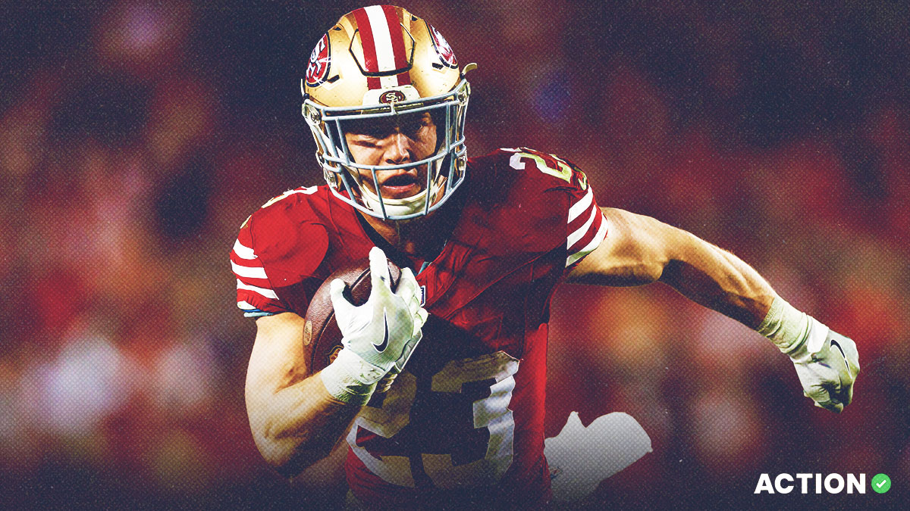
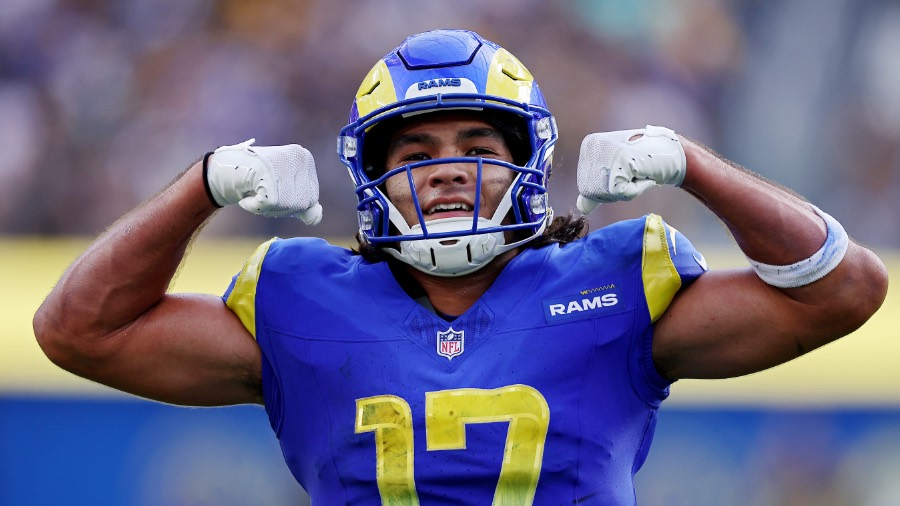
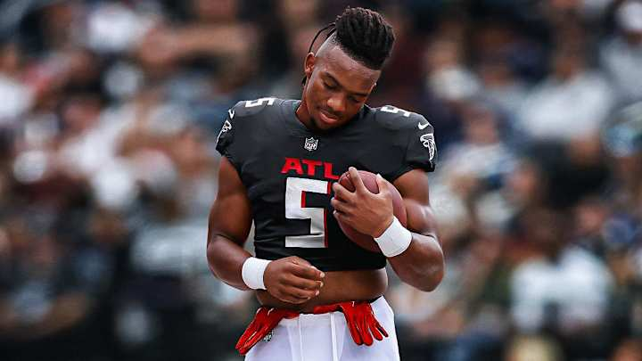
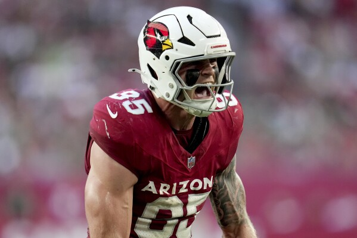
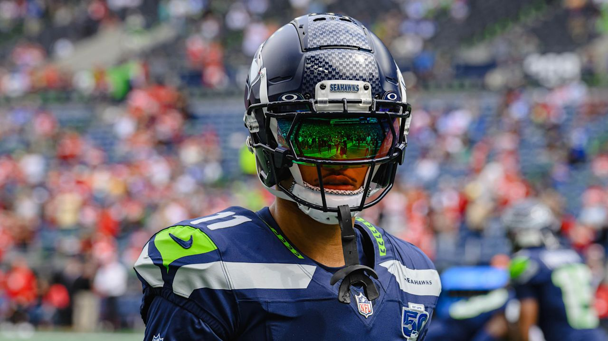
Draft Outlook & Roster Needs
My Nacua (Josh): Protect the Puka timeline; plan for Stafford volatility; keep QB depth behind Maye. Stargazer (Dylan): Turn inherited strength into sustainable depth; avoid ‘all-in whiplash’; keep RB insulation. Cron Squad (Cron): Live with the Purdy thesis; add insulation around the bet; maximize weekly ceiling. Dgeiger1982 (Drew): Chase WR ceiling; manage injury exposure; decide whether you’re contending or reloading. Everyone else: Pick a lane—rebuild with purpose or contend without excuses.
2026 Rookie Draft Outlook (Year 4 Big Board)
Early projection board (late-season update). Landing spots will reorder everything, but this is the watchlist for Year 4.
Rank
Player
School
Ht
Wt
1
Jeremiyah Love(RB)
Notre Dame
6'0"
214 lbs
2
Jordyn Tyson(WR)
Arizona State
6'2"
200 lbs
3
Carnell Tate(WR)
Ohio State
6'3"
191 lbs
4
Justice Haynes(RB)
Michigan
5'11"
210 lbs
5
Makai Lemon(WR)
USC
5'11"
195 lbs
6
Denzel Boston(WR)
Washington
6'4"
209 lbs
7
KC Concepcion(WR)
Texas A&M
5'11"
190 lbs
8
Chris Brazzell II(WR)
Tennessee
6'5"
200 lbs
9
Kaytron Allen(RB)
Penn State
5'11"
217 lbs
10
Eli Stowers(TE)
Vanderbilt
6'4"
235 lbs
11
Jonah Coleman(RB)
Washington
5'9"
228 lbs
12
Kenyon Sadiq(TE)
Oregon
6'3"
245 lbs
13
Demond Claiborne(RB)
Wake Forest
5'10"
195 lbs
14
Chris Bell(WR)
Louisville
6'2"
220 lbs
15
Fernando Mendoza(QB)
Indiana
6'5"
225 lbs
16
Emmett Johnson(RB)
Nebraska
5'11"
200 lbs
17
Ja'Kobi Lane(WR)
USC
6'4"
200 lbs
18
Dante Moore(QB)
Oregon
6'3"
206 lbs
19
Nicholas Singleton(RB)
Penn State
6'0"
224 lbs
20
Jadarian Price(RB)
Notre Dame
5'11"
209 lbs
21
Duce Robinson(WR/TE)
Florida State
6'6"
222 lbs
22
Malachi Fields(WR)
Notre Dame
6'4"
223 lbs
23
Michael Trigg(TE)
Baylor
6'4"
240 lbs
24
Hollywood Smothers(RB)
NC State
5'11"
195 lbs
25
Nyck Harbor(WR)
South Carolina
6'5"
235 lbs
Draft strategy note: In a 10-team dynasty, elite RB/WR tiers disappear fast. If you’re a contender, buy picks early; if you’re rebuilding, hoard seconds and let the board come to you.
Final Word
Prestige Worldwide is now in its permanent dynasty phase. The receipts are archived, the rivalries are loud, and Year 4 is already talking trash. The only question is whether you’re building a future—or paying for your past.